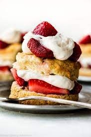

Strawberry Shortcake

Description
Strawberry Shortcake is a nice, light dessert that is especially appreciated in the summer.
Ingredients
- Cleaned and cut strawberries
- Sugar to sprinkle on strawberries
- Shortcake cups or biscuits
- Whipped cream or milk for topping
Instructions
- Place cleaned and washed strawberries in a mixing or serving bowl.
- Sprinkle sugar over strawberries (to taste) and mix.
- Place shortcake in bowl (for milk) or on a plate (for whipped cream>.
- Pile strawberries on top of the shortcake.
- Top with whipped cream or milk and enjoy!
Back to main page (Odin Recipes)